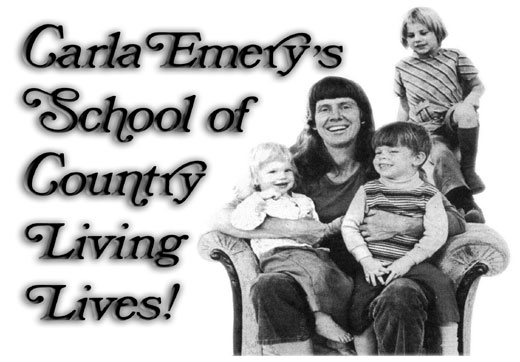

For those of you who haven't yet heard the good news, Carla Emery's School of Country Living-progress on which was beset with legal problems earlier this year, and feared delayed until at least the spring of 1976-opened this June after all, with the blessings of Kendrick, Idaho residents. (in case you're not familiar with the incredible Carla, her remarkable Old-Fashioned Recipe Book, and the story of Ms. Emery's now-come-true dream of establishing a School of Country Living, see MOTHER NO. 32 and the Plowboy Interview in MOTHER NO. 33.)
Of course, nothing of a size and scope akin to what Carla has in mind happens overnight. As things stand, guest cabin and dormitory space is minimal, and many students stay in hotels or other places outside the school, or in their own sleeping bags or tents on the "campus". There's a crying need for more instructors, too: If you're a top-notch, grade-A cheesemaker, tanner, leatherworker, or mechanic and would like to pass your knowledge and skills on to others-let Carla know who you are and where you can be reached.
On the other hand, if you're interested in actually attending the school-either this fall or, next year-now's the time to send a note off (Carla Emery, School of Country Living, Kendrick, Idaho 83573) to get the lowdown on accommodations, available classes, and whatever else you'd' like to know. And if you can't find the time or means to get to Kendrick for firsthand rural living experience, do the next-best thing: Order up a copy of The Old-Fashioned Recipe Book (available direct from Carla for $12.45-which goes toward funding the future of the School of Country Living-and 500 postage) and treat yourself to a "cookbook" that's . . . well, an education all by itself.
|
 |
|
|